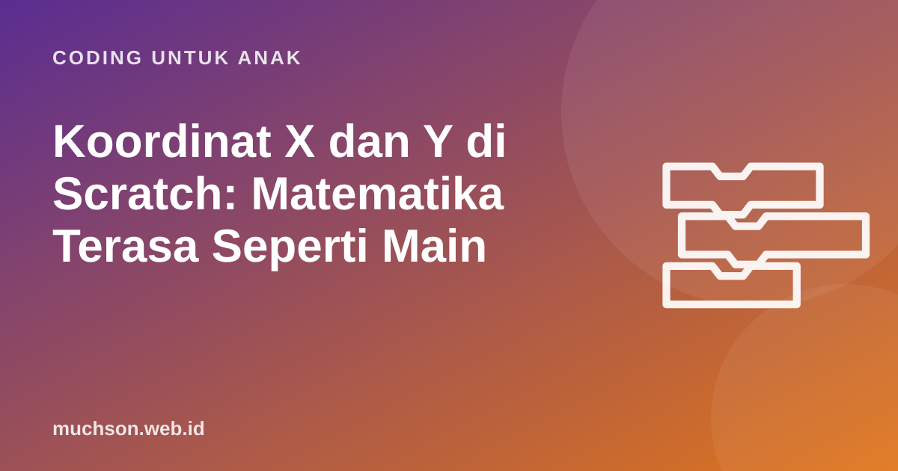

Beranda › Artikel › Coding untuk Anak
Coding untuk AnakKoordinat X dan Y di Scratch: Matematika Terasa Seperti Main
Banyak anak baru bertemu koordinat kartesius dan bilangan negatif di kelas atas SD atau SMP, dan sering merasa itu abstrak. Di Scratch, koordinat langsung terlihat: ubah angka x, kucing berpindah ke kanan atau kiri. Artikel ini menjelaskan sistem koordinat panggung Scratch dan cara memanfaatkannya untuk belajar matematika sambil bermain.

Panggung Scratch adalah bidang koordinat
Panggung Scratch berukuran 480 × 360 titik. Titik tengahnya adalah (0, 0). Nilai x menunjukkan posisi mendatar: dari −240 di tepi kiri sampai 240 di tepi kanan. Nilai y menunjukkan posisi tegak: dari −180 di bawah sampai 180 di atas.
"Angka x itu kanan-kiri, angka y itu atas-bawah. Positif artinya kanan atau atas, negatif artinya kiri atau bawah. Tengah panggung itu nol, nol."
Bilangan negatif jadi masuk akal
Bilangan negatif sering membingungkan karena "kurang dari nol" terdengar mustahil. Di panggung Scratch, negatif hanya berarti "di sebelah kiri tengah" atau "di bawah tengah". Analogi lain yang akrab: termometer (suhu di bawah nol) dan lantai basement di mal (B1, B2 di bawah lantai dasar).
Coba eksperimen ini bersama anak: atur kucing ke x: 0, lalu "ubah x sebesar −50" berkali-kali. Tanyakan sebelum setiap klik: "Sekarang x berapa?" 0, −50, −100, −150. Anak melihat angkanya mengecil dan kucingnya bergeser ke kiri. Dua representasi yang sama, angka dan posisi, saling menguatkan.
Blok koordinat yang perlu dikenal
| Blok | Artinya |
|---|---|
| pergi ke x: ... y: ... | Langsung pindah ke titik tertentu |
| meluncur ... detik ke x: ... y: ... | Bergerak halus ke titik tertentu |
| ubah x sebesar ... | Geser ke kanan (positif) atau kiri (negatif) |
| ubah y sebesar ... | Geser ke atas (positif) atau bawah (negatif) |
| atur x ke ... / atur y ke ... | Ubah salah satu koordinat saja |
| posisi x / posisi y | Membaca posisi sekarang (untuk dibandingkan) |
Latihan: tebak posisinya
Permainan koordinat tanpa layar
- Harta karun di lantai. Tempel lakban membentuk sumbu di lantai. Sembunyikan benda di titik tertentu dan beri "peta" berupa koordinat.
- Kapal-kapalan (battleship) di kertas petak. Masing-masing menyembunyikan kapal, lalu bergantian menebak koordinat.
- Gambar rahasia. Beri daftar titik untuk dihubungkan. Hasilnya gambar bintang atau rumah.
Koordinat untuk game
Hampir semua game memakai koordinat: memeriksa apakah pemain sudah melewati garis finis (jika posisi x > 200), membuat musuh muncul acak di atas (y: 170, x: acak −220 sampai 220), atau membuat tombol yang menyala saat kursor berada di area tertentu. Begitu anak lancar membaca koordinat, ia siap membuat game yang jauh lebih menarik. Di kurikulum PixelKode, koordinat dibahas di modul 2 lalu dipakai lagi di modul 3 untuk gerakan game dan di modul 4 untuk membuat zona di panggung.
Tanya jawab
Berapa ukuran panggung Scratch?
Kelas berapa anak belajar koordinat di sekolah?
Kenapa koordinat y Scratch ke atas positif, padahal di beberapa program ke bawah?
Bagaimana tahu koordinat sebuah titik di panggung?
Sumber dan bacaan lanjut
- Scratch untuk pendidik
- Papert, S. (1980). Mindstorms: matematika lewat pemrograman (edisi daring)
- Scherer dkk. (2019). Meta-analisis transfer belajar pemrograman, termasuk ke matematika